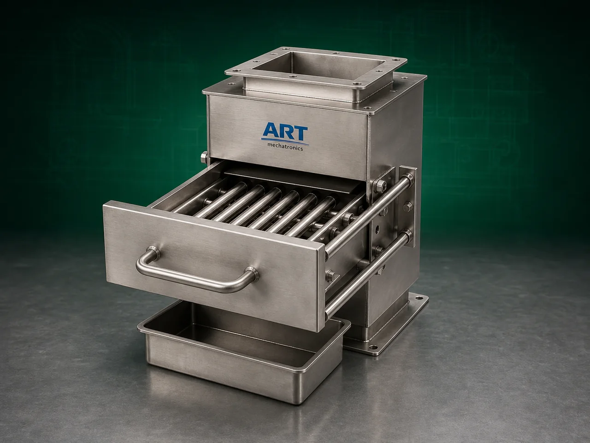

Magnetic Separator Machine (Industrial Metal Contamination Removal System)
A Magnetic Separator Machine, also known as an Industrial Magnetic Separator or Metal Separation System, is an essential industrial equipment designed for removing ferrous metal particles, iron contamination, metallic impurities, and tramp metal from powders, granules, grains, spices, food products, chemicals, minerals, and bulk materials.

About the Magnetic Separator
Magnetic separators play a critical role in industrial processing plants by improving:
- Product purity
- Food safety
- Product quality
- Equipment protection
- Export quality compliance
The machine uses powerful:
- Permanent magnets
- Rare earth magnets
- Electromagnetic systems
to attract and separate ferrous contaminants from the product stream.
Magnetic separator machines are widely used in industries such as:
• Food processing
• Flour mills
• Rice mills
• Spice industries
• Pharmaceuticals
• Chemicals
• Plastics
• Minerals
• Recycling industries
where metal contamination control and product purity are essential.
The machine is highly suitable for:
- Iron particle removal
- Metal contamination separation
- Product purification
- Machinery protection
- Food-grade processing lines
- Powder and granule cleaning systems
ART Mechatronics offers high-performance magnetic separator machines, engineered for efficient metal removal, hygienic operation, continuous industrial processing, and reliable long-term performance.
One machine, many names
Buyers search for this equipment under many terms — we manufacture all of them:
Working Principle of Magnetic Separator Machine
Ferrous particles are attracted toward magnetic surface
Machine removes:
- Iron particles
- Ferrous impurities
- Metallic contamination
- Tramp metal pieces from material stream efficiently.
Types of Magnetic Separator Machines
- 1. Magnetic Grill Separator
Uses: ✔ Magnetic rods arranged in grid formation for powders and granular products.
- 2. Magnetic Drum Separator
Uses: ✔ Rotating magnetic drum for continuous metal separation applications.
- 3. Inline Magnetic Separator
Installed directly in:
- Pneumatic conveying systems
- Gravity pipelines for continuous contamination removal.
- 4. Hopper Magnetic Separator
Mounted on:
- Feed hoppers
- Storage bins for bulk material protection.
- 5. Rare Earth Magnetic Separator
Uses: ✔ High-intensity rare earth magnets for ultra-fine metal particle separation.
- 6. Electromagnetic Separator
Uses: ✔ Electrically generated magnetic field for heavy industrial separation applications.
Industries Using Magnetic Separator Machine
🍃 Food Processing Industry
- Metal contamination removal from food products
🌾 Flour Mill Industry
- Iron particle removal from wheat and flour
🍚 Rice Mill Industry
- Metal separation from grains and rice
🌶️ Spice Industry
- Spice purity and contamination control
💊 Pharmaceutical Industry
- API and powder purification
⚗️ Chemical Industry
- Chemical powder contamination removal
⛏️ Mineral Industry
- Ferrous material separation
♻️ Recycling Industry
- Metal recovery and separation applications
Features & Advantages
- Efficient ferrous metal separation
- Improves product purity and food safety
- Protects downstream machinery from damage
- Continuous industrial operation
- High-intensity magnetic separation
- Hygienic food-grade construction available
- Heavy-duty industrial design
- Low maintenance requirement
- Energy-efficient operation
Technical Highlights
- Magnetic Technology:
- Permanent magnets
- Rare earth magnets
- Electromagnetic systems
- Separation Type:
- Drum separation
- Grill separation
- Inline separation
- Construction: Stainless Steel / Mild Steel
- Installation Options:
- Inline
- Hopper mounted
- Conveyor mounted
- Operation:
- Manual cleaning
- Semi-automatic
- Fully automatic self-cleaning systems
Turnkey Magnetic Separation Solutions
ART Mechatronics offers:
- Complete magnetic separation systems
- Pneumatic conveying integration
- Screening and grading integration
- Food-grade contamination control systems
- Installation & commissioning
- After-sales service & AMC
Why Choose Art Mechatronics
- Expertise in industrial contamination control systems
- Customized magnetic separation solutions for multiple industries
- High-performance and durable machine construction
- Energy-efficient and reliable industrial designs
- Proven industrial performance across sectors
Applications
- Food Processing Plants
- Flour Mills
- Rice Processing Industries
- Pharmaceutical Manufacturing Units
- Chemical Processing Plants
- Mineral & Recycling Industries
Industries that use the Magnetic Separator
Related Cleaning, Sorting & Grading machines
Get pricing & specs for the Magnetic Separator
Share the product, target capacity, current process and plant location. These details help our engineers discuss the right machine or line configuration.
One partner, from design to start-up
ART Mechatronics designs, manufactures, installs and commissions your Magnetic Separator solution with regional presence in India, UAE and Thailand.